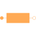

EddyCurrentConstant loss model under sinusoidal magnetic conditions |

|
Information
This information is part of the Modelica Standard Library maintained by the Modelica Association.
The eddy current loss model with respect to fundamental wave effects is designed in accordance to FluxTubes.Basic.EddyCurrent and FundamentalWave.Components.EddyCurrent.
 .
.

|
Due to the nature of eddy current losses, which can be represented by symmetric
conductors in an equivalent electric circuit (Fig. 1), the respective
number of phases  has to be taken into account.
Assume that the
has to be taken into account.
Assume that the  conductances
of the equivalent circuit are
conductances
of the equivalent circuit are  ,
the conductance for the eddy current loss model is determined by
,
the conductance for the eddy current loss model is determined by

where  is the number of turns of the symmetric electromagnetic coupling.
is the number of turns of the symmetric electromagnetic coupling.
For such an  phase system
the relationship between the voltage and current space phasors
and the magnetic flux and magnetic potential difference phasor is
phase system
the relationship between the voltage and current space phasors
and the magnetic flux and magnetic potential difference phasor is
 ,
,
 ,
,
where  and
and  are the phase voltages and currents, respectively.
are the phase voltages and currents, respectively.
The dissipated loss power

can be determined for the space phasor relationship of the voltage and current space phasor.
See also
Parameters (3)
| useHeatPort |
Value: false Type: Boolean Description: = true, if heatPort is enabled |
|---|---|
| T |
Value: 273.15 Type: Temperature (K) Description: Fixed device temperature if useHeatPort = false |
| G |
Value: Type: Conductance (S) Description: Equivalent symmetric loss conductance |
Connectors (3)
| port_p |
Type: PositiveMagneticPort Description: Positive quasi-static magnetic port of fundamental wave machines |
|
|---|---|---|
| port_n |
Type: NegativeMagneticPort Description: Negative quasi-static magnetic port of fundamental wave machines |
|
| heatPort |
Type: HeatPort_a Description: Optional port to which dissipated losses are transported in form of heat |
Components (3)
| V_m |
Type: ComplexMagneticPotentialDifference Description: Complex magnetic potential difference |
|
|---|---|---|
| Phi |
Type: ComplexMagneticFlux Description: Complex magnetic flux |
|
| j |
Type: Complex |
Used in Examples (1)
|
Modelica.Magnetic.QuasiStatic.FundamentalWave.Examples.Components Comparison of equivalent circuits of eddy current loss models |
Used in Components (1)
|
Modelica.Magnetic.QuasiStatic.FundamentalWave.BasicMachines.Components Symmetric winding model coupling electrical and magnetic domain |